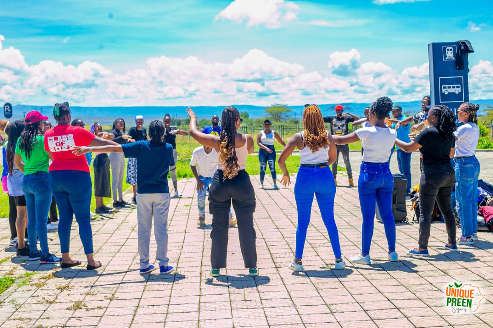

progress
35% Complete (success)
20% Complete (warning)
10% Complete (danger)

Welcome to My Portfolio
Discover my work and projects ive done before and my capabilities.
Welcome to my portfolio! I'm thrilled to have you here. As a junior web developer, I'm passionate about developing functional web pages that leave a lasting impression. Explore my projects, look into my skills, and get to know me better. Let's create something amazing together!
this are some of the images of codes an previous projects
Frontend Development
My Skills
Frontend Development:
HTML & CSS: Expertise in creating responsive, semantic layouts that work across all devices.
JavaScript: Proficient in vanilla JavaScript as well as modern frameworks like React, Angular, and Vue.js.
Responsive Design: Ensuring that websites look great on desktops, tablets, and mobile devices.
passion for developmennt
I am passionate about web development and continually seek to improve my skills and stay updated with the latest industry trends. My enthusiasm for technology drives me to deliver high-quality, cutting-edge solutions
2. Commitment to Client Satisfaction:
Your satisfaction is my priority. I work closely with clients to understand their needs and provide personalized solutions. I believe in transparent communication and am dedicated to exceeding your expectations.
I prioritize the user experience in every project I undertake. I create websites that are not only visually appealing but also easy to navigate and use.
5. Reliable and Professional:
As a junior developer, I bring a fresh perspective and a strong work ethic to every project. I am committed to meeting deadlines, maintaining open communication, and delivering reliable, professional service
Let's Work Together!
Ready to bring your vision to life? Whether you need a brand-new website or updates to an existing one, I am here to help. Explore my portfolio to see examples of my work and feel free to reach out to discuss your project. Let’s build something amazing together!

You have finnaly made it !!
Explore our Cutting-Edge Services.
we ara dedicated to delivering top-tier solutions tailored to your needs. Whether you're looking to enhance your online presence, optimize your digital strategy.
Wy choose us
1.Expertise:
we are seasoned developer bringing good exerience in web development.
2.Innovation
we stay ahead of industry trends to provide you with the latest technologies and strategies.
3.Customization:
Every solution is crafted to meet your unique goals and challenges.
4.Our Services Include:
a.Web Development:
From dynamic websites to robust web applications, we build digital experiences that drive results.
b.Digital Marketing
Elevate your brand with targeted strategies in SEO, PPC, and social media marketing.
get started today contact
Explore our services, browse our portfolio, and contact us to discuss how we can help you achieve your business objectives. Let's innovate together and transform your digital presence into a competitive advantage.
---
Feel free to adapt this message to reflect the specific services, values, and unique selling points of your business. It's essential to convey professionalism, expertise, and a customer-focused approach to attract and engage web traffic effectively.
Testimonials
Jane mukami,
"I was impressed with philemon's ability to quickly grasp complex requirements and translate them into functional, visually appealing web pages. Despite being a junior developer, they showcased a remarkable level of professionalism and technical skill. Their creative solutions and proactive communication made the entire development process smooth and efficient."
Emily Davis,
Owner of Artistry Boutique
"I couldn't be happier with the website that philemon developed for my business. Their technical skills and aesthetic sense are impressive for a junior developer. They were responsive to feedback and made sure every detail was perfect. Thanks to philemon mutisya, our online presence has significantly improved, attracting more customers and boosting our sales."
Michael Brown,
"philemon mutisya is a talented junior web developer who consistently delivers high-quality work. They are quick to learn and adapt, and their problem-solving skills are top-notch. Their ability to collaborate effectively with our team and meet tight deadlines was invaluable to our project's success. I look forward to working with you on future projects."
Projects
Welcome to my portfolio! Explore a showcase of my previous projects where creativity meets functionality. Each project reflects my commitment to delivering high-quality solutions tailored to client needs.
this are projects we have developed
.png)

we generated a portfolio website for shax moving entertainment
A portfolio website is a digital platform where individuals or businesses showcase their work, skills, achievements, and capabilities. It serves as a professional portfolio and an online resume, presenting a curated collection of projects and accomplishments to potential clients, employers, or collaborators. Here is a website we created for shax moving entertainment
we developed a website for kenyan hikes to show case their intrest in hiking and exloring nature
Hiking offers numerous benefits that contribute to both physical and mental well-being, making it a popular outdoor activity for many people. Here are some compelling reasons why you might consider hiking. we enhanced the organization by developing a wep page to attract and educata more people
.png)